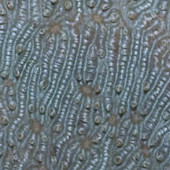
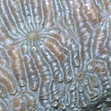
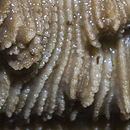
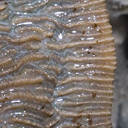
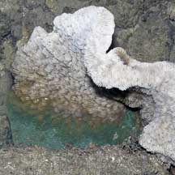
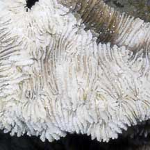
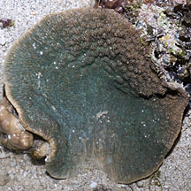
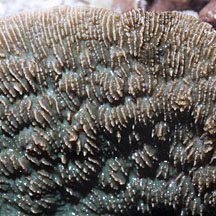
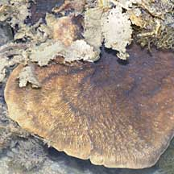
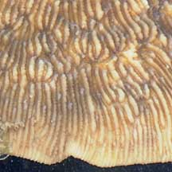

|
|
| hard corals text index | photo index |
| Phylum Cnidaria > Class Anthozoa > Subclass Zoantharia/Hexacorallia > Order Scleractinia > Family Fungiidae |
| Bracket
mushroom coral Podabacia sp.* Family Fungiidae updated Jan 2010 Where seen? This plate-like coral with intricate patterns on the surface is sometimes seen on some of our Southern shores, growing attached to coral rubble near living reefs. Features: Flat plate-like 30-40cm in diameter, attached at the base but wavy at the edges. May also be encrusting. The upper side has a distinctive pattern of fine parallel lines perpendicular to the edge. There is a 'waist' in the parallel lines at the mouth of the corallite, i.e., the parallel lines merge at regular intervals. The lines are thin with fine 'teeth'. Tentacles are said to appear only at night. Colours seen include brown, green and blue. May be confused with other plate-like corals. Status and threats: Podabacia motuporensis is listed as globally Near Threatened by the IUCN. |
 Terumbu Raya, Jul 11 |
 |
 Parallel lines merge at the mouth. |
|
 Corallite lines thin with fine 'teeth'. |
 |
|
 Raffles Lighthouse, Jul 06  |
 Terumbu Pempang Tengah, Jul 12  |
 Beting Bemban Besar, Apr 10  |
*Species are difficult to positively identify without close examination.
On this website, they are grouped by external features for convenience of display.
| Bracket mushroom corals on Singapore shores |
On wildsingapore
flickr
|
| Other sightings on Singapore shores |
| Podabacia
species recorded for Singapore from Danwei Huang, Karenne P. P. Tun, L. M Chou and Peter A. Todd. 30 Dec 2009. An inventory of zooxanthellate sclerectinian corals in Singapore including 33 new records. **the species found on many shores in Danwei's paper. in red are those listed as threatened on the IUCN global list.
|
|
Links
References
|